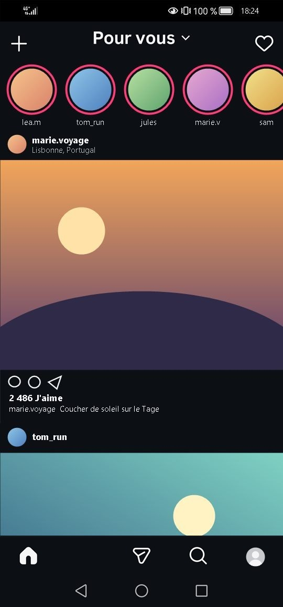
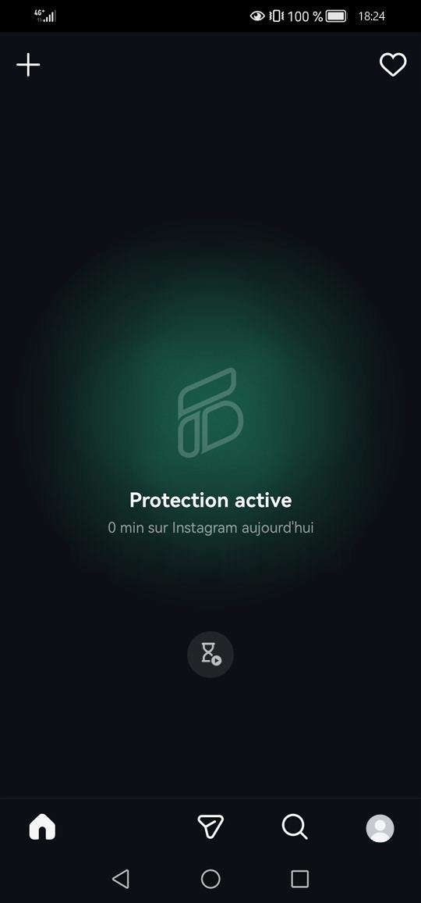

FeedBlock te protège du défilement sans fin des Reels, Shorts et autres fils, tout en préservant les fonctionnalités utiles de tes applications.
Les fils ne s'affichent plus automatiquement lorsque tu ouvres une application : c'est toi qui décides quand et combien de temps y accéder.
Bientôt sur Google Play

Tu passes trop de temps sur ton téléphone et tu aimerais changer ça ?
Tu veux continuer à suivre tes amis sans subir les contenus qu'on t'impose ?
Tu ouvres une application pour publier, mais tu te fais happer par le défilement sans fin ?
FeedBlock est fait pour toi.Tu choisis lesquelles protéger.
Messages, recherche, profils, notifications et publication restent toujours accessibles sur chacune des applications.

Essai Pro 7 jours gratuits. Rien n'est prélevé pendant 7 jours.
Tes données restent privées et ne quittent jamais ton appareil. En savoir plus